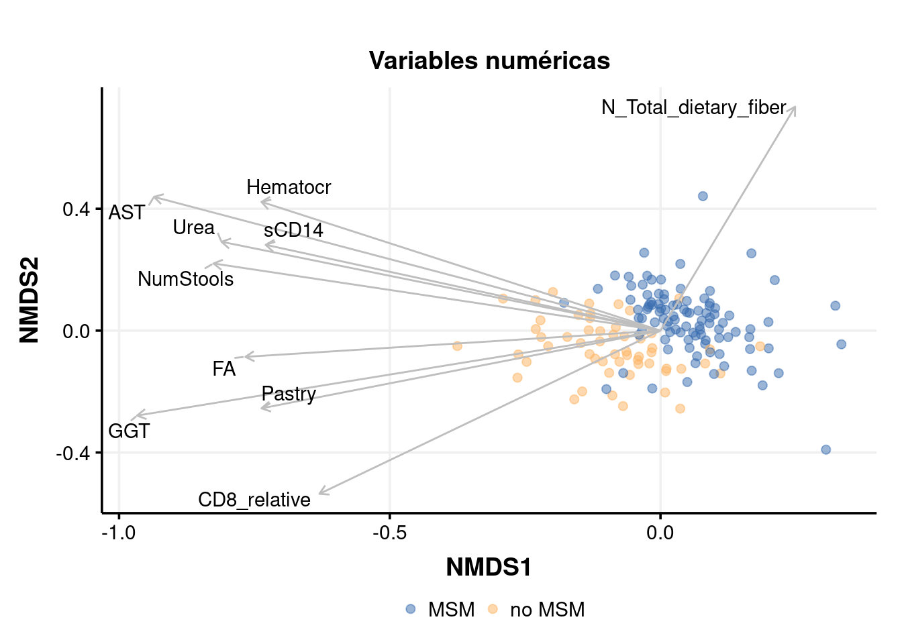
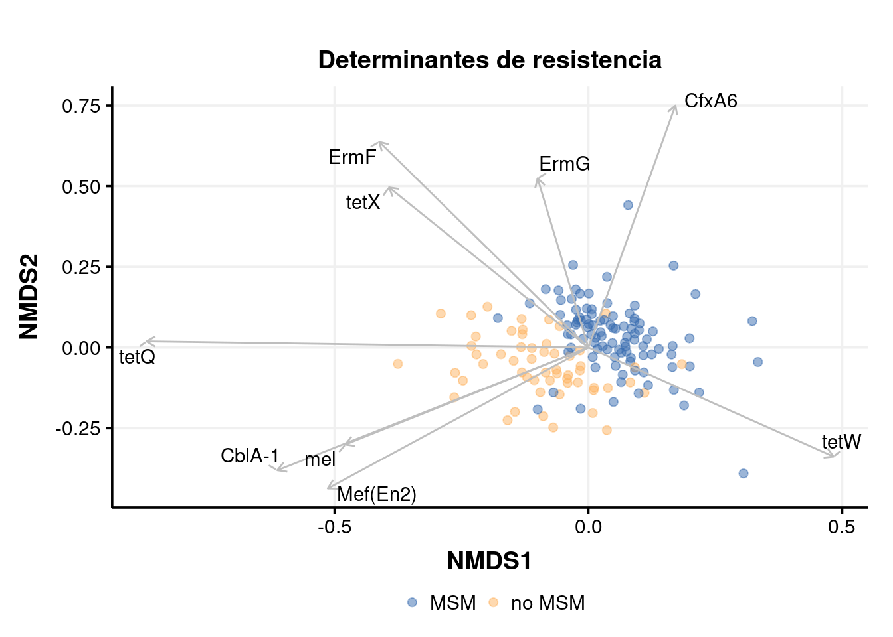
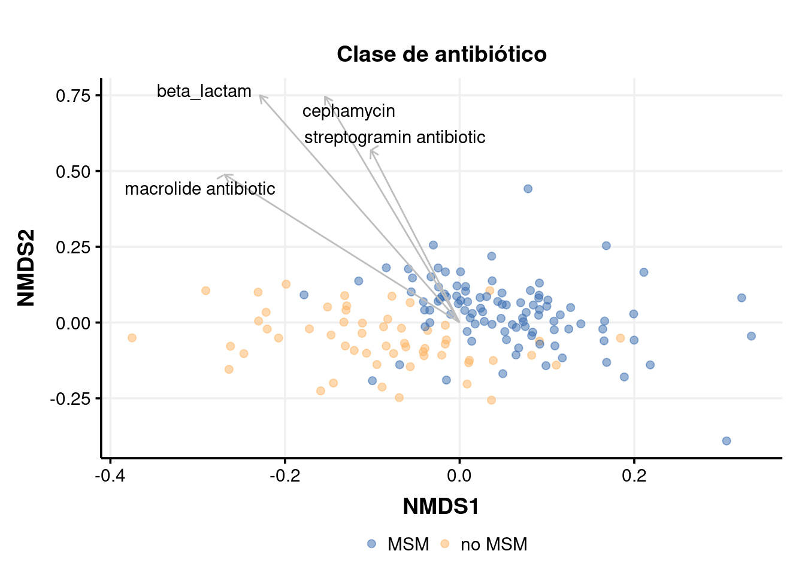
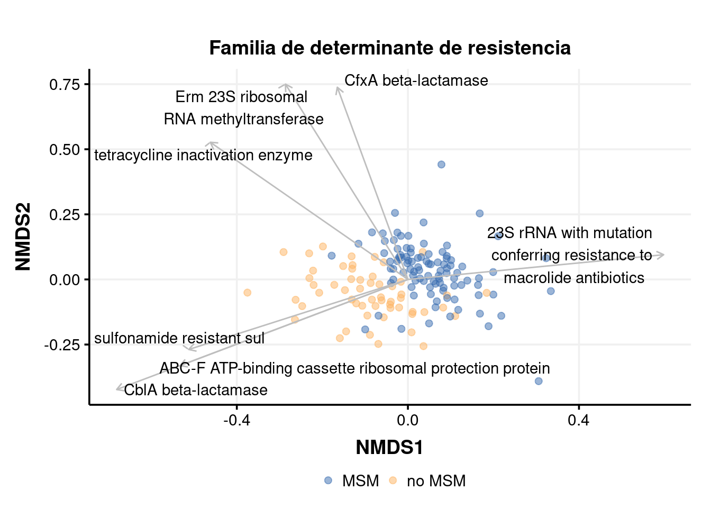

Last updated: 2022-12-04
Checks: 6 1
Knit directory: 2022_Rubio_MetaHIV/
This reproducible R Markdown analysis was created with workflowr (version 1.7.0). The Checks tab describes the reproducibility checks that were applied when the results were created. The Past versions tab lists the development history.
The R Markdown is untracked by Git. To know which version of the R Markdown file created these results, you’ll want to first commit it to the Git repo. If you’re still working on the analysis, you can ignore this warning. When you’re finished, you can run wflow_publish to commit the R Markdown file and build the HTML.
Great job! The global environment was empty. Objects defined in the global environment can affect the analysis in your R Markdown file in unknown ways. For reproduciblity it’s best to always run the code in an empty environment.
The command set.seed(20220202) was run prior to running the code in the R Markdown file. Setting a seed ensures that any results that rely on randomness, e.g. subsampling or permutations, are reproducible.
Great job! Recording the operating system, R version, and package versions is critical for reproducibility.
Nice! There were no cached chunks for this analysis, so you can be confident that you successfully produced the results during this run.
Great job! Using relative paths to the files within your workflowr project makes it easier to run your code on other machines.
Great! You are using Git for version control. Tracking code development and connecting the code version to the results is critical for reproducibility.
The results in this page were generated with repository version 94ec2b4. See the Past versions tab to see a history of the changes made to the R Markdown and HTML files.
Note that you need to be careful to ensure that all relevant files for the analysis have been committed to Git prior to generating the results (you can use wflow_publish or wflow_git_commit). workflowr only checks the R Markdown file, but you know if there are other scripts or data files that it depends on. Below is the status of the Git repository when the results were generated:
Ignored files:
Ignored: .Rhistory
Ignored: .Rproj.user/
Ignored: analysis/.Rhistory
Ignored: output/aribaData/
Ignored: output/grootData/
Untracked files:
Untracked: alpha_div_nosig.png
Untracked: analysis/PEC3_biplots.Rmd
Untracked: output/envfit_rpkm_amr_corlev2.csv
Untracked: output/envfit_rpkm_drugclass_corlev2.csv
Untracked: output/envfit_rpkm_genefamily_corlev2.csv
Untracked: output/envfit_rpkm_meta_top10.csv
Unstaged changes:
Modified: analysis/04_alpha_div.Rmd
Modified: analysis/PEC3.Rmd
Modified: code/functions.R
Note that any generated files, e.g. HTML, png, CSS, etc., are not included in this status report because it is ok for generated content to have uncommitted changes.
There are no past versions. Publish this analysis with wflow_publish() to start tracking its development.
library(tidyverse)
library(kableExtra)
library(vegan)
library(ggpubr)
library(glue)
library(patchwork)
library(ggthemes)
library(grid)
library(ggrepel)load("output/summarized_ariba.RDA")
load("output/ariba_dist.RDA")
load("output/grouped_rpkm_ariba.RDA")
load("output/grouped_refname_ariba.RDA")
source("code/functions.R")ART_groups<-c("concordant", "discordant ", "early_treated")
gene_richness<-read.delim2("data/Metadata/generichness_data.txt")%>%
select(SampleID, GCount)
metadata<-read_csv("data/Metadata/metadata.csv")%>%
mutate(ratio_CD4_CD8=CD4_absolute/CD8_absolute,
ART=ifelse(Profile %in% ART_groups, "TAR", "No TAR"),
MSM_dic=ifelse(RiskGroup2=="msm", "MSM", "no MSM"))%>%
inner_join(gene_richness, by="SampleID")Rows: 156 Columns: 133
── Column specification ────────────────────────────────────────────────────────
Delimiter: ","
chr (36): SampleID, Gender, EthnicGroup, HIV_Status, Profile, RiskGroup1, Ri...
dbl (97): ID_BD, Age, FreqPartnersAnalSex, BMI, Postal_code, NumStools, ALT,...
ℹ Use `spec()` to retrieve the full column specification for this data.
ℹ Specify the column types or set `show_col_types = FALSE` to quiet this message.set.seed(200889)
nmds_rpkm<-metaMDS(ariba_dist$dist_rpkm, trace = 0, trymax = 200)set.seed(200889)
cor_rpkm_meta<-corr_meta_envfit(metadata, nmds_rpkm)
cor_rpkm_meta%>%slice_max(r2, n=10)%>%
select(-NMDS1, -NMDS2)%>%
kable(caption="**Top 10 correlated Clinical variables with NMDS axes** (Ariba RPKM)")%>%kable_paper("striped")%>%scroll_box(width = "100%", height = "500px")| Variable | r2 | p.value |
|---|---|---|
| AST | 0.1690821 | 0.069 |
| GGT | 0.1602029 | 0.064 |
| Urea | 0.1175595 | 0.134 |
| NumStools | 0.1155965 | 0.139 |
| Hematocr | 0.1142849 | 0.139 |
| CD8_relative | 0.1082064 | 0.145 |
| sCD14 | 0.0967432 | 0.177 |
| Pastry | 0.0962553 | 0.208 |
| N_Total_dietary_fiber | 0.0952914 | 0.173 |
| FA | 0.0942149 | 0.204 |
top_n=10
cor_rpkm_meta_top10<-cor_rpkm_meta%>%slice_max(r2, n=top_n)
write_csv(cor_rpkm_meta_top10, "output/envfit_rpkm_meta_top10.csv")source("code/functions.R")
p1<-biplot_amr_envfit(cor_rpkm_meta_top10, nmds_rpkm, metadata, MSM_dic, Variable)+
labs(title = "Variables numéricas")+theme(legend.title = element_blank())
Attaching package: 'scales'The following object is masked from 'package:purrr':
discardThe following object is masked from 'package:readr':
col_factorWarning: `legend.margin` must be specified using `margin()`. For the old
behavior use legend.spacingp1
set.seed(200889)
cor_rpkm_amr<-corr_amr_envfit(ariba_rpkm, refname_all_ariba, nmds_rpkm)Warning: The `x` argument of `as_tibble.matrix()` must have unique column names if `.name_repair` is omitted as of tibble 2.0.0.
Using compatibility `.name_repair`.
This warning is displayed once every 8 hours.
Call `lifecycle::last_lifecycle_warnings()` to see where this warning was generated.cor_rpkm_amr%>%slice_max(r2, n=20)%>%select(`ARO Name`, r2, p.value, everything(), -NMDS1, -NMDS2)%>%
kable(caption="**Top 20 correlated AMR genes with NMDS axes** (Ariba RPKM)")%>%kable_paper("striped")%>%scroll_box(width = "100%", height = "500px")| ARO Name | r2 | p.value | ref_name | ARO Term | ARO Accession | NCBI | init_final | CVTERM ID | Protein Accession | DNA Accession | AMR Gene Family | Drug Class | Resistance Mechanism |
|---|---|---|---|---|---|---|---|---|---|---|---|---|---|
| tetQ | 0.5903074 | 0.001 | tetQ.3000191.Z21523.0_1974.476 | tetQ | 3000191 | Z21523 | 0_1974 | 36330 | CAA79727.1 | Z21523 | tetracycline-resistant ribosomal protection protein | tetracycline antibiotic | antibiotic target protection |
| CfxA6 | 0.4608610 | 0.001 | CfxA6.3003097.GQ342996.797_1793.1744 | CfxA6 | 3003097 | GQ342996 | 797_1793 | 39650 | ACT97371.1 | GQ342996 | CfxA beta-lactamase | cephamycin | antibiotic inactivation |
| ErmF | 0.4487833 | 0.001 | ErmF.3000498.M17124.1181_1982.593 | ErmF | 3000498 | M17124 | 1181_1982 | 36637 | AAA88675.1 | M17124 | Erm 23S ribosomal RNA methyltransferase | lincosamide antibiotic;macrolide antibiotic;streptogramin antibiotic | antibiotic target alteration |
| CblA-1 | 0.4050422 | 0.001 | CblA_1.3002999.GQ343019.132_1023.1188 | CblA_1 | 3002999 | GQ343019 | 132_1023 | 39433 | ACT97415.1 | GQ343019 | CblA beta-lactamase | cephalosporin | antibiotic inactivation |
| Mef(En2) | 0.3537413 | 0.001 | Mef_En2_.3004659.AF251288.1.794_2000.5539 | Mef_En2_ | 3004659 | AF251288 . 1 | 794_2000 | 42698 | AAF74725.1 | AF251288.1 | major facilitator superfamily (MFS) antibiotic efflux pump | macrolide antibiotic | antibiotic efflux |
| tetX | 0.3118352 | 0.001 | tetX.3000205.M37699.585_1752.79 | tetX | 3000205 | M37699 | 585_1752 | 36344 | AAA27471.1 | M37699 | tetracycline inactivation enzyme | glycylcycline;tetracycline antibiotic | antibiotic inactivation |
| tetW | 0.2705962 | 0.001 | tetW.3000194.AJ222769.3.3686_5606.5145 | tetW | 3000194 | AJ222769 . 3 | 3686_5606 | 36333 | CAA10975.1 | AJ222769.3 | tetracycline-resistant ribosomal protection protein | tetracycline antibiotic | antibiotic target protection |
| mel | 0.2489629 | 0.001 | mel.3000616.AF227521.1.3269_4487.5180 | mel | 3000616 | AF227521 . 1 | 3269_4487 | 36910 | AAL73129.1 | AF227521.1 | ABC-F ATP-binding cassette ribosomal protection protein | lincosamide antibiotic;macrolide antibiotic;oxazolidinone antibiotic;phenicol antibiotic;pleuromutilin antibiotic;streptogramin antibiotic;tetracycline antibiotic | antibiotic target protection |
| ErmG | 0.2219797 | 0.001 | ErmG.3000522.L42817.201_936.590 | ErmG | 3000522 | L42817 | 201_936 | 36661 | AAC37034.1 | L42817 | Erm 23S ribosomal RNA methyltransferase | lincosamide antibiotic;macrolide antibiotic;streptogramin antibiotic | antibiotic target alteration |
| sul2 | 0.1887185 | 0.001 | sul2.3000412.AY055428.1.20268_21084.4745 | sul2 | 3000412 | AY055428 . 1 | 20268_21084 | 36551 | AAL59753.1 | AY055428.1 | sulfonamide resistant sul | sulfonamide antibiotic;sulfone antibiotic | antibiotic target replacement |
| CfxA2 | 0.1838080 | 0.001 | CfxA2.3003002.AF118110.1.71_1037.4470 | CfxA2 | 3003002 | AF118110 . 1 | 71_1037 | 39436 | AAD23513.1 | AF118110.1 | CfxA beta-lactamase | cephamycin | antibiotic inactivation |
| Mycoplasma hominis 23S rRNA with mutation conferring resistance to macrolide antibiotics | 0.1820248 | 0.001 | Mycoplasma_hominis_23S.3004176.CP011538.1.333282_336166.4166 | Mycoplasma_hominis_23S | 3004176 | CP011538 . 1 | 333282_336166 | 41327 | NA | CP011538.1 | 23S rRNA with mutation conferring resistance to macrolide antibiotics | glycopeptide antibiotic;lincosamide antibiotic;macrolide antibiotic;phenicol antibiotic;pleuromutilin antibiotic;streptogramin antibiotic | antibiotic target alteration |
| Chlamydomonas reinhardtii 16S rRNA (rrnS) mutation conferring resistance to streptomycin | 0.1683592 | 0.001 | rrnS.3003978.NC_005353.1.38549_40023.4108 | rrnS | 3003978 | NC_005353 . 1 | 38549_40023 | 40814 | NA | NC_005353.1 | 16s rRNA with mutation conferring resistance to aminoglycoside antibiotics | aminoglycoside antibiotic;glycopeptide antibiotic;glycylcycline;nucleoside antibiotic;peptide antibiotic;tetracycline antibiotic | antibiotic target alteration |
| Brachyspira hyodysenteriae 23S rRNA with mutation conferring resistance to tylosin | 0.1518795 | 0.001 | Brachyspira_hyodysenteriae_23S.3004133.NZ_CP015910.2.2512812_2515808.4183 | Brachyspira_hyodysenteriae_23S | 3004133 | NZ_CP015910 . 2 | 2512812_2515808 | 41260 | NA | NZ_CP015910.2 | 23S rRNA with mutation conferring resistance to macrolide antibiotics | glycopeptide antibiotic;lincosamide antibiotic;macrolide antibiotic;phenicol antibiotic;pleuromutilin antibiotic;streptogramin antibiotic | antibiotic target alteration |
| aadS | 0.1423614 | 0.001 | aadS.3004683.M72415.1.1120_1984.5568 | aadS | 3004683 | M72415 . 1 | 1120_1984 | 42732 | AAA27459.1 | M72415.1 | ANT(6) | aminoglycoside antibiotic | antibiotic inactivation |
| Escherichia coli ampC1 beta-lactamase | 0.1346535 | 0.001 | Escherichia_coli_ampC1.3004611.FN649414.1.2765050_2766355.5236 | Escherichia_coli_ampC1 | 3004611 | FN649414 . 1 | 2765050_2766355 | 42575 | CBJ02047.1 | FN649414.1 | ampC-type beta-lactamase | cephalosporin;penam | antibiotic inactivation |
| Campylobacter jejuni 23S rRNA with mutation conferring resistance to erythromycin | 0.1342265 | 0.001 | Campylobacter_jejuni_23S.3004546.NR_076226.1.0_2912.5105 | Campylobacter_jejuni_23S | 3004546 | NR_076226 . 1 | 0_2912 | 42445 | NA | NR_076226.1 | 23S rRNA with mutation conferring resistance to macrolide antibiotics | glycopeptide antibiotic;lincosamide antibiotic;macrolide antibiotic;phenicol antibiotic;pleuromutilin antibiotic;streptogramin antibiotic | antibiotic target alteration |
| Escherichia coli gyrA with mutation conferring resistance to triclosan | 0.1320445 | 0.001 | gyrA.3004335.U00096.3.2336792_2339420.4469 | gyrA | 3004335 | U00096 . 3 | 2336792_2339420 | 41503 | AAC75291.1 | U00096.3 | triclosan resistant gyrA | triclosan | antibiotic target alteration |
| Neisseria gonorrhoeae 23S rRNA with mutation conferring resistance to azithromycin | 0.1226001 | 0.001 | Neisseria_gonorrhoeae_23S.3004836.NR_103957.0_2910.5918 | Neisseria_gonorrhoeae_23S | 3004836 | NR_103957 | 0_2910 | 42966 | NA | NR_103957 | 23S rRNA with mutation conferring resistance to macrolide antibiotics | glycopeptide antibiotic;lincosamide antibiotic;macrolide antibiotic;phenicol antibiotic;pleuromutilin antibiotic;streptogramin antibiotic | antibiotic target alteration |
| baeS | 0.1211112 | 0.002 | baeS.3000829.AP009048.2165012_2166416.608 | baeS | 3000829 | AP009048 | 2165012_2166416 | 37209 | BAA15934.1 | AP009048 | resistance-nodulation-cell division (RND) antibiotic efflux pump | aminocoumarin antibiotic;aminoglycoside antibiotic | antibiotic efflux |
cor_level<-0.2
cor_rpkm_amr_corlev2<-cor_rpkm_amr%>%filter(p.value<=0.05 & r2 > cor_level)
write_csv(cor_rpkm_amr_corlev2, "output/envfit_rpkm_amr_corlev2.csv")p2<-biplot_amr_envfit(cor_rpkm_amr_corlev2, nmds_rpkm, metadata, MSM_dic, `ARO Name`)+
labs(title = "Determinantes de resistencia")+theme(legend.title = element_blank())Warning: `legend.margin` must be specified using `margin()`. For the old
behavior use legend.spacingp2
set.seed(200889)
cor_rpkm_drugclass<-corr_group_envfit(data_group=ariba_rpkm_drugclass, refdata_group = refname_ariba_drugclass, nmds = nmds_rpkm)
cor_rpkm_drugclass%>%slice_max(r2, n=20)%>%select(group_name, r2, p.value, everything(), -NMDS1, -NMDS2)%>%
kable(caption="**Top 20 correlated drug classes with NMDS axes** (Ariba RPKM)")%>%kable_paper("striped")%>%scroll_box(width = "100%", height = "500px")| group_name | r2 | p.value | AMR Gene Family | ARO Term |
|---|---|---|---|---|
| beta_lactam | 0.4479248 | 0.001 | NA | NA |
| cephamycin | 0.4226239 | 0.001 | CfxA beta-lactamase;resistance-nodulation-cell division (RND) antibiotic efflux pump;ATP-binding cassette (ABC) antibiotic efflux pump;major facilitator superfamily (MFS) antibiotic efflux pump;resistance-nodulation-cell division (RND) antibiotic efflux pump;General Bacterial Porin with reduced permeability to beta-lactams;CfxA beta-lactamase;ATP-binding cassette (ABC) antibiotic efflux pump;General Bacterial Porin with reduced permeability to beta-lactams;major facilitator superfamily (MFS) antibiotic efflux pump;resistance-nodulation-cell division (RND) antibiotic efflux pump;major facilitator superfamily (MFS) antibiotic efflux pump;resistance-nodulation-cell division (RND) antibiotic efflux pump;General Bacterial Porin with reduced permeability to beta-lactams;Penicillin-binding protein mutations conferring resistance to beta-lactam antibiotics;ACT beta-lactamase;General Bacterial Porin with reduced permeability to beta-lactams;resistance-nodulation-cell division (RND) antibiotic efflux pump;CfxA beta-lactamase;ACT beta-lactamase;CMY beta-lactamase | CfxA2;CfxA6;CfxA3;AcrE;AcrF;AcrS;TolC;porin_OmpC;Klebsiella_aerogenes_Omp36;Klebsiella_pneumoniae_OmpK35;Klebsiella_pneumoniae_OmpK36;Klebsiella_pneumoniae_OmpK37;OmpA;CfxA5;soxS;H_NS;ompF;Streptococcus_pneumoniae_PBP2b;ACT_17;marA;CfxA4;ACT_45;ACT_4;ACT_7;ACT_38;ACT_39;CMY_90;CMY_169 |
| streptogramin antibiotic | 0.2434340 | 0.001 | 23S rRNA with mutation conferring resistance to macrolide antibiotics;Erm 23S ribosomal RNA methyltransferase;23S rRNA with mutation conferring resistance to macrolide antibiotics;23S rRNA with mutation conferring resistance to linezolid antibiotics;23S rRNA with mutation conferring resistance to macrolide antibiotics;23S rRNA with mutation conferring resistance to streptogramins antibiotics;23S rRNA with mutation conferring resistance to pleuromutilin antibiotics;ABC-F ATP-binding cassette ribosomal protection protein;23S rRNA with mutation conferring resistance to macrolide antibiotics;23S rRNA with mutation conferring resistance to oxazolidinone antibiotics;Erm 23S ribosomal RNA methyltransferase;23S rRNA with mutation conferring resistance to macrolide antibiotics;Erm 23S ribosomal RNA methyltransferase;23S rRNA with mutation conferring resistance to macrolide antibiotics;Erm 23S ribosomal RNA methyltransferase;23S rRNA with mutation conferring resistance to macrolide antibiotics;ABC-F ATP-binding cassette ribosomal protection protein;23S rRNA with mutation conferring resistance to macrolide antibiotics;Erm 23S ribosomal RNA methyltransferase;23S rRNA with mutation conferring resistance to pleuromutilin antibiotics;ABC-F ATP-binding cassette ribosomal protection protein;23s rRNA with mutation conferring resistance to aminoglycoside antibiotics;23S rRNA with mutation conferring resistance to macrolide antibiotics;ABC-F ATP-binding cassette ribosomal protection protein;23S rRNA with mutation conferring resistance to macrolide antibiotics;ABC-F ATP-binding cassette ribosomal protection protein;23S rRNA with mutation conferring resistance to macrolide antibiotics;ABC-F ATP-binding cassette ribosomal protection protein;Cfr 23S ribosomal RNA methyltransferase | Clostridioides_difficile_23S;ErmB;ErmF;ErmG;Moraxella_catarrhalis_23S;Mycoplasma_hominis_23S;Neisseria_gonorrhoeae_23S;Staphylococcus_aureus_23S;Streptococcus_pneumoniae_23S;Thermus_thermophilus_23s;mel;Campylobacter_jejuni_23S;Chlamydia_trachomatis_23S;Escherichia_coli_23S;23S_rRNA_adenine_2058N_6_methyltransferase;Mycobacterium_intracellulare_23S;ErmX;Brachyspira_hyodysenteriae_23S;Helicobacter_pylori_23S;Mycoplasma_fermentans_23S;Streptomyces_ambofaciens_23S;Erm_49;Mycoplasma_genitalium_23S;Mycolicibacterium_smegmatis_23S;msrC;Mycobacterium_avium_23S;ErmQ;Mycoplasma_gallisepticum_23S;lsaA;Mycobacterium_tuberculosis_23S;Propionibacteria_23S_rRNA;Mycobacteroides_abscessus_23S;Mycobacterium_kansasii_23S;lsaE;Mycoplasma_pneumoniae_23S;Mycobacteroides_chelonae_23S;lsaC;Chlamydomonas_reinhardtii_23S;eatAv;cfr_B_ |
| macrolide antibiotic | 0.2267116 | 0.001 | 23S rRNA with mutation conferring resistance to macrolide antibiotics;Erm 23S ribosomal RNA methyltransferase;major facilitator superfamily (MFS) antibiotic efflux pump;23S rRNA with mutation conferring resistance to macrolide antibiotics;23S rRNA with mutation conferring resistance to linezolid antibiotics;23S rRNA with mutation conferring resistance to macrolide antibiotics;23S rRNA with mutation conferring resistance to streptogramins antibiotics;23S rRNA with mutation conferring resistance to pleuromutilin antibiotics;ABC-F ATP-binding cassette ribosomal protection protein;23S rRNA with mutation conferring resistance to macrolide antibiotics;23S rRNA with mutation conferring resistance to oxazolidinone antibiotics;Erm 23S ribosomal RNA methyltransferase;23S rRNA with mutation conferring resistance to macrolide antibiotics;Erm 23S ribosomal RNA methyltransferase;23S rRNA with mutation conferring resistance to macrolide antibiotics;resistance-nodulation-cell division (RND) antibiotic efflux pump;23S rRNA with mutation conferring resistance to macrolide antibiotics;ATP-binding cassette (ABC) antibiotic efflux pump;major facilitator superfamily (MFS) antibiotic efflux pump;resistance-nodulation-cell division (RND) antibiotic efflux pump;major facilitator superfamily (MFS) antibiotic efflux pump;resistance-nodulation-cell division (RND) antibiotic efflux pump;major facilitator superfamily (MFS) antibiotic efflux pump;resistance-nodulation-cell division (RND) antibiotic efflux pump;Erm 23S ribosomal RNA methyltransferase;ATP-binding cassette (ABC) antibiotic efflux pump;pmr phosphoethanolamine transferase;major facilitator superfamily (MFS) antibiotic efflux pump;23S rRNA with mutation conferring resistance to macrolide antibiotics;macrolide phosphotransferase (MPH);major facilitator superfamily (MFS) antibiotic efflux pump;ABC-F ATP-binding cassette ribosomal protection protein;23S rRNA with mutation conferring resistance to macrolide antibiotics;Erm 23S ribosomal RNA methyltransferase;major facilitator superfamily (MFS) antibiotic efflux pump;resistance-nodulation-cell division (RND) antibiotic efflux pump;ATP-binding cassette (ABC) antibiotic efflux pump;pmr phosphoethanolamine transferase;23S rRNA with mutation conferring resistance to pleuromutilin antibiotics;ATP-binding cassette (ABC) antibiotic efflux pump;ABC-F ATP-binding cassette ribosomal protection protein;23s rRNA with mutation conferring resistance to aminoglycoside antibiotics;23S rRNA with mutation conferring resistance to macrolide antibiotics;ABC-F ATP-binding cassette ribosomal protection protein;23S rRNA with mutation conferring resistance to macrolide antibiotics;ABC-F ATP-binding cassette ribosomal protection protein;small multidrug resistance (SMR) antibiotic efflux pump;23S rRNA with mutation conferring resistance to macrolide antibiotics;macrolide esterase;ABC-F ATP-binding cassette ribosomal protection protein;major facilitator superfamily (MFS) antibiotic efflux pump | Clostridioides_difficile_23S;ErmB;ErmF;ErmG;Mef_En2_;Moraxella_catarrhalis_23S;Mycoplasma_hominis_23S;Neisseria_gonorrhoeae_23S;Staphylococcus_aureus_23S;Streptococcus_pneumoniae_23S;Thermus_thermophilus_23s;mel;Campylobacter_jejuni_23S;Chlamydia_trachomatis_23S;Escherichia_coli_23S;23S_rRNA_adenine_2058N_6_methyltransferase;Mycobacterium_intracellulare_23S;ErmX;Brachyspira_hyodysenteriae_23S;Helicobacter_pylori_23S;CRP;Mycoplasma_fermentans_23S;Streptomyces_ambofaciens_23S;TolC;evgA;evgS;gadW;gadX;mdtE;mdtF;Erm_49;Klebsiella_mutant_PhoP;Klebsiella_pneumoniae_KpnE;Klebsiella_pneumoniae_KpnF;Klebsiella_pneumoniae_KpnG;Mycoplasma_genitalium_23S;Mycolicibacterium_smegmatis_23S;mphA;efmA;msrC;Mycobacterium_avium_23S;ErmQ;H_NS;mgrB;Mycoplasma_gallisepticum_23S;efrA;lsaA;Mycobacterium_tuberculosis_23S;Propionibacteria_23S_rRNA;Mycobacteroides_abscessus_23S;Mycobacterium_kansasii_23S;lsaE;Mycoplasma_pneumoniae_23S;Mycobacteroides_chelonae_23S;lsaC;emrE;Chlamydomonas_reinhardtii_23S;EreD;eatAv;mef_B_ |
| glycylcycline | 0.1698771 | 0.001 | 16s rRNA with mutation conferring resistance to aminoglycoside antibiotics;tetracycline inactivation enzyme;16S rRNA with mutation conferring resistance to tetracycline derivatives;16s rRNA with mutation conferring resistance to aminoglycoside antibiotics;resistance-nodulation-cell division (RND) antibiotic efflux pump;ATP-binding cassette (ABC) antibiotic efflux pump;major facilitator superfamily (MFS) antibiotic efflux pump;resistance-nodulation-cell division (RND) antibiotic efflux pump;16S rRNA with mutation conferring resistance to tetracycline derivatives;ATP-binding cassette (ABC) antibiotic efflux pump;major facilitator superfamily (MFS) antibiotic efflux pump;resistance-nodulation-cell division (RND) antibiotic efflux pump;16s rRNA with mutation conferring resistance to aminoglycoside antibiotics;16s rRNA with mutation conferring resistance to peptide antibiotics;ATP-binding cassette (ABC) antibiotic efflux pump;General Bacterial Porin with reduced permeability to beta-lactams;major facilitator superfamily (MFS) antibiotic efflux pump;resistance-nodulation-cell division (RND) antibiotic efflux pump;16s rRNA with mutation conferring resistance to aminoglycoside antibiotics;resistance-nodulation-cell division (RND) antibiotic efflux pump;General Bacterial Porin with reduced permeability to beta-lactams;resistance-nodulation-cell division (RND) antibiotic efflux pump;16s rRNA with mutation conferring resistance to aminoglycoside antibiotics | Mycobacteroides_chelonae_16S;Neisseria_meningitidis_16S;Pasteurella_multocida_16S;rrnS;rrsH;tetX;Tet_X4_;Helicobacter_pylori_16S;Cutibacterium_acnes_16S;Chlamydophila_psittaci_16S;AcrS;TolC;acrA;acrB;acrR;rrsB;soxR;oqxA;oqxB;ramR;rrsD;rrsC;rrsB;soxS;Mycobacterium_tuberculosis_16S;rrsB;Neisseria_gonorrhoeae_16S;marR;marA;Mycobacteroides_abscessus_16S |
| sulfonamide antibiotic | 0.1333663 | 0.001 | sulfonamide resistant sul;sulfonamide resistant dihydropteroate synthase folP;sulfonamide resistant sul | sul2;sul1;folP;sul3 |
| sulfone antibiotic | 0.1333663 | 0.001 | sulfonamide resistant sul;sulfonamide resistant dihydropteroate synthase folP;sulfonamide resistant sul | sul2;sul1;folP;sul3 |
| lincosamide antibiotic | 0.1227553 | 0.001 | 23S rRNA with mutation conferring resistance to macrolide antibiotics;Erm 23S ribosomal RNA methyltransferase;23S rRNA with mutation conferring resistance to macrolide antibiotics;23S rRNA with mutation conferring resistance to linezolid antibiotics;23S rRNA with mutation conferring resistance to macrolide antibiotics;23S rRNA with mutation conferring resistance to streptogramins antibiotics;23S rRNA with mutation conferring resistance to pleuromutilin antibiotics;lincosamide nucleotidyltransferase (LNU);ABC-F ATP-binding cassette ribosomal protection protein;23S rRNA with mutation conferring resistance to macrolide antibiotics;23S rRNA with mutation conferring resistance to oxazolidinone antibiotics;Erm 23S ribosomal RNA methyltransferase;23S rRNA with mutation conferring resistance to macrolide antibiotics;Erm 23S ribosomal RNA methyltransferase;23S rRNA with mutation conferring resistance to macrolide antibiotics;Erm 23S ribosomal RNA methyltransferase;23S rRNA with mutation conferring resistance to macrolide antibiotics;ABC-F ATP-binding cassette ribosomal protection protein;23S rRNA with mutation conferring resistance to macrolide antibiotics;Erm 23S ribosomal RNA methyltransferase;major facilitator superfamily (MFS) antibiotic efflux pump;23S rRNA with mutation conferring resistance to pleuromutilin antibiotics;ATP-binding cassette (ABC) antibiotic efflux pump;ABC-F ATP-binding cassette ribosomal protection protein;23s rRNA with mutation conferring resistance to aminoglycoside antibiotics;23S rRNA with mutation conferring resistance to macrolide antibiotics;lincosamide nucleotidyltransferase (LNU);23S rRNA with mutation conferring resistance to macrolide antibiotics;ABC-F ATP-binding cassette ribosomal protection protein;23S rRNA with mutation conferring resistance to macrolide antibiotics;ABC-F ATP-binding cassette ribosomal protection protein;23S rRNA with mutation conferring resistance to macrolide antibiotics;ABC-F ATP-binding cassette ribosomal protection protein;Cfr 23S ribosomal RNA methyltransferase | Clostridioides_difficile_23S;ErmB;ErmF;ErmG;Moraxella_catarrhalis_23S;Mycoplasma_hominis_23S;Neisseria_gonorrhoeae_23S;Staphylococcus_aureus_23S;Streptococcus_pneumoniae_23S;Thermus_thermophilus_23s;lnuC;mel;Campylobacter_jejuni_23S;Chlamydia_trachomatis_23S;Escherichia_coli_23S;23S_rRNA_adenine_2058N_6_methyltransferase;Mycobacterium_intracellulare_23S;ErmX;Brachyspira_hyodysenteriae_23S;Helicobacter_pylori_23S;Mycoplasma_fermentans_23S;Streptomyces_ambofaciens_23S;Erm_49;Mycoplasma_genitalium_23S;Mycolicibacterium_smegmatis_23S;msrC;Mycobacterium_avium_23S;ErmQ;mdtM;Mycoplasma_gallisepticum_23S;lmrD;lsaA;Mycobacterium_tuberculosis_23S;Propionibacteria_23S_rRNA;LnuP;Mycobacteroides_abscessus_23S;Mycobacterium_kansasii_23S;lsaE;Mycoplasma_pneumoniae_23S;Mycobacteroides_chelonae_23S;lsaC;Chlamydomonas_reinhardtii_23S;eatAv;cfr_B_ |
| aminocoumarin antibiotic | 0.1075712 | 0.002 | ATP-binding cassette (ABC) antibiotic efflux pump;major facilitator superfamily (MFS) antibiotic efflux pump;resistance-nodulation-cell division (RND) antibiotic efflux pump;aminocoumarin resistant gyrB;resistance-nodulation-cell division (RND) antibiotic efflux pump;ATP-binding cassette (ABC) antibiotic efflux pump;fluoroquinolone resistant gyrB;resistance-nodulation-cell division (RND) antibiotic efflux pump | TolC;cpxA;gyrB;mdtB;LptD;gyrB;baeR;baeS;mdtA;mdtC |
| benzalkonium chloride | 0.1070930 | 0.002 | major facilitator superfamily (MFS) antibiotic efflux pump | mdfA |
| rhodamine | 0.1070930 | 0.002 | major facilitator superfamily (MFS) antibiotic efflux pump | mdfA |
| penam | 0.1056556 | 0.001 | ACI beta-lactamase;OXA beta-lactamase;resistance-nodulation-cell division (RND) antibiotic efflux pump;OXA beta-lactamase;ATP-binding cassette (ABC) antibiotic efflux pump;major facilitator superfamily (MFS) antibiotic efflux pump;resistance-nodulation-cell division (RND) antibiotic efflux pump;ampC-type beta-lactamase;major facilitator superfamily (MFS) antibiotic efflux pump;resistance-nodulation-cell division (RND) antibiotic efflux pump;major facilitator superfamily (MFS) antibiotic efflux pump;resistance-nodulation-cell division (RND) antibiotic efflux pump;General Bacterial Porin with reduced permeability to beta-lactams;ATP-binding cassette (ABC) antibiotic efflux pump;major facilitator superfamily (MFS) antibiotic efflux pump;resistance-nodulation-cell division (RND) antibiotic efflux pump;ACC beta-lactamase;General Bacterial Porin with reduced permeability to beta-lactams;major facilitator superfamily (MFS) antibiotic efflux pump;General Bacterial Porin with reduced permeability to beta-lactams;LEN beta-lactamase;General Bacterial Porin with reduced permeability to beta-lactams;SHV beta-lactamase;resistance-nodulation-cell division (RND) antibiotic efflux pump;TEM beta-lactamase;ATP-binding cassette (ABC) antibiotic efflux pump;General Bacterial Porin with reduced permeability to beta-lactams;major facilitator superfamily (MFS) antibiotic efflux pump;resistance-nodulation-cell division (RND) antibiotic efflux pump;major facilitator superfamily (MFS) antibiotic efflux pump;resistance-nodulation-cell division (RND) antibiotic efflux pump;General Bacterial Porin with reduced permeability to beta-lactams;Penicillin-binding protein mutations conferring resistance to beta-lactam antibiotics;ACT beta-lactamase;ampC-type beta-lactamase;General Bacterial Porin with reduced permeability to beta-lactams;resistance-nodulation-cell division (RND) antibiotic efflux pump;ACC beta-lactamase;OXA beta-lactamase;TEM beta-lactamase;OXA beta-lactamase;TEM beta-lactamase;OXA beta-lactamase;ampC-type beta-lactamase;OXA beta-lactamase;ACT beta-lactamase;TEM beta-lactamase;ACT beta-lactamase;SHV beta-lactamase;TEM beta-lactamase | ACI_1;OXA_660;AcrE;AcrF;AcrS;CRP;OXA_347;TolC;acrA;acrB;acrR;ampH;evgA;evgS;gadW;gadX;mdtE;mdtF;porin_OmpC;soxR;ACC_1d;Klebsiella_aerogenes_Omp36;Klebsiella_pneumoniae_KpnG;Klebsiella_pneumoniae_OmpK35;Klebsiella_pneumoniae_OmpK36;Klebsiella_pneumoniae_OmpK37;LEN_15;OmpA;SHV_100;ramR;TEM_124;TEM_37;soxS;H_NS;marR;ompF;Streptococcus_pneumoniae_PBP2b;ACT_17;Escherichia_coli_ampC1;marA;ACC_1;OXA_63;TEM_82;OXA_471;TEM_93;TEM_95;TEM_34;OXA_472;ampC;OXA_786;ACT_45;ACT_4;ACT_7;TEM_187;TEM_90;ACT_38;ACT_39;SHV_70;TEM_40 |
| penam_penem | 0.1056556 | 0.001 | NA | NA |
| triclosan | 0.1017470 | 0.002 | resistance-nodulation-cell division (RND) antibiotic efflux pump;ATP-binding cassette (ABC) antibiotic efflux pump;major facilitator superfamily (MFS) antibiotic efflux pump;resistance-nodulation-cell division (RND) antibiotic efflux pump;triclosan resistant gyrA;ATP-binding cassette (ABC) antibiotic efflux pump;major facilitator superfamily (MFS) antibiotic efflux pump;resistance-nodulation-cell division (RND) antibiotic efflux pump;antibiotic resistant fabG;resistance-nodulation-cell division (RND) antibiotic efflux pump;ATP-binding cassette (ABC) antibiotic efflux pump;General Bacterial Porin with reduced permeability to beta-lactams;major facilitator superfamily (MFS) antibiotic efflux pump;resistance-nodulation-cell division (RND) antibiotic efflux pump;antibiotic resistant fabI;resistance-nodulation-cell division (RND) antibiotic efflux pump;General Bacterial Porin with reduced permeability to beta-lactams;resistance-nodulation-cell division (RND) antibiotic efflux pump | AcrS;TolC;acrA;acrB;acrR;gyrA;soxR;fabG;ramR;soxS;fabI;marR;marA |
| fluoroquinolone antibiotic | 0.1001274 | 0.003 | fluoroquinolone resistant gyrA;fluoroquinolone resistant parC;resistance-nodulation-cell division (RND) antibiotic efflux pump;ATP-binding cassette (ABC) antibiotic efflux pump;major facilitator superfamily (MFS) antibiotic efflux pump;resistance-nodulation-cell division (RND) antibiotic efflux pump;major facilitator superfamily (MFS) antibiotic efflux pump;resistance-nodulation-cell division (RND) antibiotic efflux pump;major facilitator superfamily (MFS) antibiotic efflux pump;resistance-nodulation-cell division (RND) antibiotic efflux pump;fluoroquinolone resistant parE;ATP-binding cassette (ABC) antibiotic efflux pump;major facilitator superfamily (MFS) antibiotic efflux pump;resistance-nodulation-cell division (RND) antibiotic efflux pump;major facilitator superfamily (MFS) antibiotic efflux pump;fluoroquinolone resistant gyrB;resistance-nodulation-cell division (RND) antibiotic efflux pump;ATP-binding cassette (ABC) antibiotic efflux pump;General Bacterial Porin with reduced permeability to beta-lactams;major facilitator superfamily (MFS) antibiotic efflux pump;resistance-nodulation-cell division (RND) antibiotic efflux pump;major facilitator superfamily (MFS) antibiotic efflux pump;MipA-interacting Protein;Sugar Porin (SP);major facilitator superfamily (MFS) antibiotic efflux pump;resistance-nodulation-cell division (RND) antibiotic efflux pump;major facilitator superfamily (MFS) antibiotic efflux pump;resistance-nodulation-cell division (RND) antibiotic efflux pump;major facilitator superfamily (MFS) antibiotic efflux pump;ATP-binding cassette (ABC) antibiotic efflux pump;General Bacterial Porin with reduced permeability to beta-lactams;resistance-nodulation-cell division (RND) antibiotic efflux pump;ATP-binding cassette (ABC) antibiotic efflux pump | gyrA;parC;AcrE;AcrF;AcrS;CRP;TolC;acrA;acrB;acrR;emrA;evgA;evgS;gadW;gadX;mdtE;mdtF;parE;soxR;Klebsiella_pneumoniae_KpnG;gyrB;oqxA;oqxB;ramR;soxS;efmA;mipA;Escherichia_coli_LamB;H_NS;emrB;emrR;marR;mdtH;mdtM;efrA;marA;patB |
| nitroimidazole antibiotic | 0.0988448 | 0.004 | ATP-binding cassette (ABC) antibiotic efflux pump | msbA |
| isoniazid | 0.0985433 | 0.003 | antibiotic resistant fabI | fabI |
| carbapenem | 0.0984190 | 0.001 | OXA beta-lactamase;ATP-binding cassette (ABC) antibiotic efflux pump;major facilitator superfamily (MFS) antibiotic efflux pump;resistance-nodulation-cell division (RND) antibiotic efflux pump;General Bacterial Porin with reduced permeability to beta-lactams;major facilitator superfamily (MFS) antibiotic efflux pump;General Bacterial Porin with reduced permeability to beta-lactams;ATP-binding cassette (ABC) antibiotic efflux pump;General Bacterial Porin with reduced permeability to beta-lactams;SHV beta-lactamase;ATP-binding cassette (ABC) antibiotic efflux pump;General Bacterial Porin with reduced permeability to beta-lactams;major facilitator superfamily (MFS) antibiotic efflux pump;resistance-nodulation-cell division (RND) antibiotic efflux pump;General Bacterial Porin with reduced permeability to beta-lactams;Penicillin-binding protein mutations conferring resistance to beta-lactam antibiotics;ACT beta-lactamase;General Bacterial Porin with reduced permeability to beta-lactams;resistance-nodulation-cell division (RND) antibiotic efflux pump;OXA beta-lactamase;CfiA beta-lactamase;OXA beta-lactamase;CfiA beta-lactamase;OXA beta-lactamase;ACT beta-lactamase;SHV beta-lactamase;CfiA beta-lactamase | OXA_660;OXA_347;TolC;porin_OmpC;Klebsiella_aerogenes_Omp36;Klebsiella_pneumoniae_KpnG;Klebsiella_pneumoniae_OmpK35;Klebsiella_pneumoniae_OmpK36;Klebsiella_pneumoniae_OmpK37;LptD;OmpA;SHV_100;soxS;ompF;Streptococcus_pneumoniae_PBP2b;ACT_17;marA;OXA_63;OXA_471;CfiA11;OXA_472;CfiA27;OXA_786;ACT_45;ACT_4;ACT_7;ACT_38;ACT_39;SHV_70;CfiA19;CfiA22;CfiA14 |
| fosfomycin | 0.0973752 | 0.002 | antibiotic-resistant UhpT;antibiotic-resistant murA transferase;antibiotic-resistant ptsI phosphotransferase;fosfomycin thiol transferase;antibiotic-resistant GlpT;antibiotic-resistant cya adenylate cyclase;major facilitator superfamily (MFS) antibiotic efflux pump;antibiotic-resistant UhpT | Escherichia_coli_UhpT;murA;Escherichia_coli_PtsI;FosA6;Escherichia_coli_GlpT;cyaA;mdtG;Escherichia_coli_UhpA |
| rifamycin antibiotic | 0.0958711 | 0.002 | rifamycin-resistant beta-subunit of RNA polymerase (rpoB);resistance-nodulation-cell division (RND) antibiotic efflux pump;ATP-binding cassette (ABC) antibiotic efflux pump;major facilitator superfamily (MFS) antibiotic efflux pump;resistance-nodulation-cell division (RND) antibiotic efflux pump;ATP-binding cassette (ABC) antibiotic efflux pump;major facilitator superfamily (MFS) antibiotic efflux pump;resistance-nodulation-cell division (RND) antibiotic efflux pump;major facilitator superfamily (MFS) antibiotic efflux pump;ATP-binding cassette (ABC) antibiotic efflux pump;resistance-nodulation-cell division (RND) antibiotic efflux pump;ATP-binding cassette (ABC) antibiotic efflux pump;General Bacterial Porin with reduced permeability to beta-lactams;major facilitator superfamily (MFS) antibiotic efflux pump;resistance-nodulation-cell division (RND) antibiotic efflux pump;ATP-binding cassette (ABC) antibiotic efflux pump;General Bacterial Porin with reduced permeability to beta-lactams;resistance-nodulation-cell division (RND) antibiotic efflux pump;rifamycin-resistant beta-subunit of RNA polymerase (rpoB) | rpoB;AcrS;TolC;acrA;acrB;acrR;soxR;Klebsiella_pneumoniae_KpnE;Klebsiella_pneumoniae_KpnF;LptD;ramR;soxS;marR;efrA;marA;rpoB2 |
cor_level<-0.2
cor_rpkm_drugclass_corlev2<-cor_rpkm_drugclass%>%filter(p.value<=0.05 & r2 > cor_level)
write_csv(cor_rpkm_drugclass_corlev2, "output/envfit_rpkm_drugclass_corlev2.csv")p3<-biplot_amr_envfit(cor_rpkm_drugclass_corlev2, nmds_rpkm, metadata, MSM_dic, group_name)+
labs(title = "Clase de antibiótico")+theme(legend.title = element_blank())Warning: `legend.margin` must be specified using `margin()`. For the old
behavior use legend.spacingp3
set.seed(200889)
cor_rpkm_genefamily<-corr_group_envfit(data_group=ariba_rpkm_genefamily, refdata_group = refname_ariba_genefamily, nmds = nmds_rpkm)
cor_rpkm_genefamily%>%slice_max(r2, n=20)%>%select(group_name, r2, p.value, everything(), -NMDS1, -NMDS2)%>%
kable(caption="**Top 20 correlated gene families with NMDS axes** (Ariba RPKM)")%>%kable_paper("striped")%>%scroll_box(width = "100%", height = "500px")| group_name | r2 | p.value | ARO Term | Drug Class |
|---|---|---|---|---|
| Erm 23S ribosomal RNA methyltransferase | 0.4063317 | 0.001 | ErmB;ErmF;ErmG;23S_rRNA_adenine_2058N_6_methyltransferase;ErmX;Erm_49;ErmQ | lincosamide antibiotic;macrolide antibiotic;streptogramin antibiotic;lincosamide antibiotic;macrolide antibiotic;streptogramin antibiotic;lincosamide antibiotic;macrolide antibiotic;streptogramin antibiotic;lincosamide antibiotic;macrolide antibiotic;streptogramin antibiotic;lincosamide antibiotic;macrolide antibiotic;streptogramin antibiotic;lincosamide antibiotic;macrolide antibiotic;streptogramin antibiotic;lincosamide antibiotic;macrolide antibiotic;streptogramin antibiotic |
| CblA beta-lactamase | 0.4050422 | 0.001 | CblA_1 | cephalosporin |
| CfxA beta-lactamase | 0.3606371 | 0.001 | CfxA2;CfxA6;CfxA3;CfxA5;CfxA4 | cephamycin |
| tetracycline inactivation enzyme | 0.3095864 | 0.001 | tetX;Tet_X4_;Tet_X1_;Tet_X6_ | glycylcycline;tetracycline antibiotic;glycylcycline;tetracycline antibiotic |
| ABC-F ATP-binding cassette ribosomal protection protein | 0.2479681 | 0.001 | mel;msrC;lsaA;lsaE;lsaC;eatAv | lincosamide antibiotic;macrolide antibiotic;oxazolidinone antibiotic;phenicol antibiotic;pleuromutilin antibiotic;streptogramin antibiotic;tetracycline antibiotic;lincosamide antibiotic;macrolide antibiotic;oxazolidinone antibiotic;phenicol antibiotic;pleuromutilin antibiotic;streptogramin antibiotic;tetracycline antibiotic;lincosamide antibiotic;macrolide antibiotic;oxazolidinone antibiotic;phenicol antibiotic;pleuromutilin antibiotic;streptogramin antibiotic;tetracycline antibiotic;lincosamide antibiotic;macrolide antibiotic;oxazolidinone antibiotic;phenicol antibiotic;pleuromutilin antibiotic;streptogramin antibiotic;tetracycline antibiotic;lincosamide antibiotic;macrolide antibiotic;oxazolidinone antibiotic;phenicol antibiotic;pleuromutilin antibiotic;streptogramin antibiotic;tetracycline antibiotic;lincosamide antibiotic;macrolide antibiotic;oxazolidinone antibiotic;phenicol antibiotic;pleuromutilin antibiotic;streptogramin antibiotic;tetracycline antibiotic |
| 23S rRNA with mutation conferring resistance to macrolide antibiotics | 0.2311205 | 0.001 | Clostridioides_difficile_23S;Moraxella_catarrhalis_23S;Mycoplasma_hominis_23S;Neisseria_gonorrhoeae_23S;Campylobacter_jejuni_23S;Chlamydia_trachomatis_23S;Mycobacterium_intracellulare_23S;Brachyspira_hyodysenteriae_23S;Helicobacter_pylori_23S;Mycoplasma_fermentans_23S;Streptomyces_ambofaciens_23S;Mycoplasma_genitalium_23S;Mycolicibacterium_smegmatis_23S;Mycobacterium_avium_23S;Propionibacteria_23S_rRNA;Mycobacteroides_abscessus_23S;Mycobacterium_kansasii_23S;Mycoplasma_pneumoniae_23S;Mycobacteroides_chelonae_23S;Chlamydomonas_reinhardtii_23S | glycopeptide antibiotic;lincosamide antibiotic;macrolide antibiotic;phenicol antibiotic;pleuromutilin antibiotic;streptogramin antibiotic;glycopeptide antibiotic;lincosamide antibiotic;macrolide antibiotic;phenicol antibiotic;pleuromutilin antibiotic;streptogramin antibiotic;glycopeptide antibiotic;lincosamide antibiotic;macrolide antibiotic;phenicol antibiotic;pleuromutilin antibiotic;streptogramin antibiotic;glycopeptide antibiotic;lincosamide antibiotic;macrolide antibiotic;phenicol antibiotic;pleuromutilin antibiotic;streptogramin antibiotic;glycopeptide antibiotic;lincosamide antibiotic;macrolide antibiotic;phenicol antibiotic;pleuromutilin antibiotic;streptogramin antibiotic;glycopeptide antibiotic;lincosamide antibiotic;macrolide antibiotic;phenicol antibiotic;pleuromutilin antibiotic;streptogramin antibiotic;glycopeptide antibiotic;lincosamide antibiotic;macrolide antibiotic;phenicol antibiotic;pleuromutilin antibiotic;streptogramin antibiotic;glycopeptide antibiotic;lincosamide antibiotic;macrolide antibiotic;phenicol antibiotic;pleuromutilin antibiotic;streptogramin antibiotic;glycopeptide antibiotic;lincosamide antibiotic;macrolide antibiotic;phenicol antibiotic;pleuromutilin antibiotic;streptogramin antibiotic;glycopeptide antibiotic;lincosamide antibiotic;macrolide antibiotic;phenicol antibiotic;pleuromutilin antibiotic;streptogramin antibiotic;glycopeptide antibiotic;lincosamide antibiotic;macrolide antibiotic;phenicol antibiotic;pleuromutilin antibiotic;streptogramin antibiotic;glycopeptide antibiotic;lincosamide antibiotic;macrolide antibiotic;phenicol antibiotic;pleuromutilin antibiotic;streptogramin antibiotic;glycopeptide antibiotic;lincosamide antibiotic;macrolide antibiotic;phenicol antibiotic;pleuromutilin antibiotic;streptogramin antibiotic;glycopeptide antibiotic;lincosamide antibiotic;macrolide antibiotic;phenicol antibiotic;pleuromutilin antibiotic;streptogramin antibiotic;glycopeptide antibiotic;lincosamide antibiotic;macrolide antibiotic;phenicol antibiotic;pleuromutilin antibiotic;streptogramin antibiotic;glycopeptide antibiotic;lincosamide antibiotic;macrolide antibiotic;phenicol antibiotic;pleuromutilin antibiotic;streptogramin antibiotic;glycopeptide antibiotic;lincosamide antibiotic;macrolide antibiotic;phenicol antibiotic;pleuromutilin antibiotic;streptogramin antibiotic;glycopeptide antibiotic;lincosamide antibiotic;macrolide antibiotic;phenicol antibiotic;pleuromutilin antibiotic;streptogramin antibiotic;glycopeptide antibiotic;lincosamide antibiotic;macrolide antibiotic;phenicol antibiotic;pleuromutilin antibiotic;streptogramin antibiotic;glycopeptide antibiotic;lincosamide antibiotic;macrolide antibiotic;phenicol antibiotic;pleuromutilin antibiotic;streptogramin antibiotic |
| sulfonamide resistant sul | 0.2111579 | 0.001 | sul2;sul1;sul3 | sulfonamide antibiotic;sulfone antibiotic;sulfonamide antibiotic;sulfone antibiotic;sulfonamide antibiotic;sulfone antibiotic |
| major facilitator superfamily (MFS) antibiotic efflux pump | 0.1558252 | 0.001 | Mef_En2_;tet_40_;emrA;emrK;mdtN;mdtO;Klebsiella_pneumoniae_KpnE;Klebsiella_pneumoniae_KpnF;Klebsiella_pneumoniae_KpnG;tet_A_;mdfA;tetR;tetA_P_;efmA;qacE;tet_C_;emrB;emrR;emrY;mdtG;mdtH;mdtM;mdtP;qacEdelta1;tet_B_;mef_B_;tet_L_;tet_D_ | macrolide antibiotic;tetracycline antibiotic;fluoroquinolone antibiotic;tetracycline antibiotic;acridine dye;disinfecting agents and intercalating dyes;nucleoside antibiotic;acridine dye;disinfecting agents and intercalating dyes;nucleoside antibiotic;aminoglycoside antibiotic;cephalosporin;macrolide antibiotic;peptide antibiotic;rifamycin antibiotic;tetracycline antibiotic;aminoglycoside antibiotic;cephalosporin;macrolide antibiotic;peptide antibiotic;rifamycin antibiotic;tetracycline antibiotic;aminoglycoside antibiotic;carbapenem;cephalosporin;fluoroquinolone antibiotic;macrolide antibiotic;penam;penem;peptide antibiotic;tetracycline antibiotic;benzalkonium chloride;rhodamine;tetracycline antibiotic;fluoroquinolone antibiotic;macrolide antibiotic;disinfecting agents and intercalating dyes;tetracycline antibiotic;fluoroquinolone antibiotic;tetracycline antibiotic;fosfomycin;fluoroquinolone antibiotic;acridine dye;disinfecting agents and intercalating dyes;fluoroquinolone antibiotic;lincosamide antibiotic;nucleoside antibiotic;phenicol antibiotic;acridine dye;disinfecting agents and intercalating dyes;nucleoside antibiotic;acridine dye;disinfecting agents and intercalating dyes;tetracycline antibiotic;macrolide antibiotic;tetracycline antibiotic |
| ANT(6) | 0.1412024 | 0.001 | ANT_6__Ia;aadS;ANT_6__Ib | aminoglycoside antibiotic |
| triclosan resistant gyrA | 0.1350257 | 0.001 | gyrA | triclosan |
| lincosamide nucleotidyltransferase (LNU) | 0.1130229 | 0.002 | lnuC;LnuP | lincosamide antibiotic |
| ampC-type beta-lactamase | 0.1118049 | 0.001 | ampH;Escherichia_coli_ampC1;ampC | cephalosporin;penam;cephalosporin;penam;cephalosporin;penam |
| sulfonamide resistant dihydropteroate synthase folP | 0.1084466 | 0.002 | folP | sulfonamide antibiotic;sulfone antibiotic |
| 23S rRNA with mutation conferring resistance to pleuromutilin antibiotics | 0.1081366 | 0.001 | Thermus_thermophilus_23s;Mycoplasma_gallisepticum_23S | glycopeptide antibiotic;lincosamide antibiotic;macrolide antibiotic;phenicol antibiotic;pleuromutilin antibiotic;streptogramin antibiotic;glycopeptide antibiotic;lincosamide antibiotic;macrolide antibiotic;phenicol antibiotic;pleuromutilin antibiotic;streptogramin antibiotic |
| kdpDE | 0.1047077 | 0.003 | kdpE | aminoglycoside antibiotic |
| APH(3’’) | 0.1044482 | 0.004 | APH_3____Ib | aminoglycoside antibiotic |
| fluoroquinolone resistant parC | 0.1027998 | 0.001 | parC | fluoroquinolone antibiotic |
| resistance-nodulation-cell division (RND) antibiotic efflux pump | 0.1025803 | 0.002 | AcrE;AcrF;AcrS;CRP;acrA;acrB;acrD;acrR;cpxA;gadW;gadX;mdtB;mdtE;mdtF;oqxA;oqxB;ramR;baeR;baeS;marR;mdtA;mdtC | cephalosporin;cephamycin;fluoroquinolone antibiotic;penam;cephalosporin;cephamycin;fluoroquinolone antibiotic;penam;cephalosporin;cephamycin;fluoroquinolone antibiotic;glycylcycline;penam;phenicol antibiotic;rifamycin antibiotic;tetracycline antibiotic;triclosan;fluoroquinolone antibiotic;macrolide antibiotic;penam;cephalosporin;fluoroquinolone antibiotic;glycylcycline;penam;phenicol antibiotic;rifamycin antibiotic;tetracycline antibiotic;triclosan;cephalosporin;fluoroquinolone antibiotic;glycylcycline;penam;phenicol antibiotic;rifamycin antibiotic;tetracycline antibiotic;triclosan;aminoglycoside antibiotic;cephalosporin;fluoroquinolone antibiotic;glycylcycline;penam;phenicol antibiotic;rifamycin antibiotic;tetracycline antibiotic;triclosan;aminocoumarin antibiotic;aminoglycoside antibiotic;fluoroquinolone antibiotic;macrolide antibiotic;penam;fluoroquinolone antibiotic;macrolide antibiotic;penam;aminocoumarin antibiotic;fluoroquinolone antibiotic;macrolide antibiotic;penam;fluoroquinolone antibiotic;macrolide antibiotic;penam;diaminopyrimidine antibiotic;fluoroquinolone antibiotic;glycylcycline;nitrofuran antibiotic;tetracycline antibiotic;diaminopyrimidine antibiotic;fluoroquinolone antibiotic;glycylcycline;nitrofuran antibiotic;tetracycline antibiotic;cephalosporin;fluoroquinolone antibiotic;glycylcycline;penam;phenicol antibiotic;rifamycin antibiotic;tetracycline antibiotic;triclosan;aminocoumarin antibiotic;aminoglycoside antibiotic;aminocoumarin antibiotic;aminoglycoside antibiotic;cephalosporin;fluoroquinolone antibiotic;glycylcycline;penam;phenicol antibiotic;rifamycin antibiotic;tetracycline antibiotic;triclosan;aminocoumarin antibiotic |
| undecaprenyl pyrophosphate related proteins | 0.1021341 | 0.002 | bacA | peptide antibiotic |
| antibiotic-resistant UhpT | 0.1018971 | 0.002 | Escherichia_coli_UhpT;Escherichia_coli_UhpA | fosfomycin |
cor_level<-0.2
cor_rpkm_genefamily_corlev2<-cor_rpkm_genefamily%>%filter(p.value<=0.05 & r2 > cor_level)
write_csv(cor_rpkm_genefamily_corlev2, "output/envfit_rpkm_genefamily_corlev2.csv")cor_rpkm_genefamily_corlev<-cor_rpkm_genefamily_corlev2%>%
mutate(group_name = replace(group_name, group_name == "23S rRNA with mutation conferring resistance to macrolide antibiotics", "23S rRNA with mutation \n conferring resistance to \n macrolide antibiotics"),
group_name = replace(group_name, group_name=="Erm 23S ribosomal RNA methyltransferase", "Erm 23S ribosomal \nRNA methyltransferase" ))
p4<-biplot_amr_envfit(cor_rpkm_genefamily_corlev, nmds_rpkm, metadata, MSM_dic, group_name)+
labs(title = "Familia de determinante de resistencia")+theme(legend.title = element_blank())Warning: `legend.margin` must be specified using `margin()`. For the old
behavior use legend.spacingp4
sessionInfo()R version 4.1.2 (2021-11-01)
Platform: x86_64-pc-linux-gnu (64-bit)
Running under: Ubuntu 20.04.3 LTS
Matrix products: default
BLAS: /usr/lib/x86_64-linux-gnu/blas/libblas.so.3.9.0
LAPACK: /usr/lib/x86_64-linux-gnu/lapack/liblapack.so.3.9.0
locale:
[1] LC_CTYPE=es_ES.UTF-8 LC_NUMERIC=C
[3] LC_TIME=es_ES.UTF-8 LC_COLLATE=es_ES.UTF-8
[5] LC_MONETARY=es_ES.UTF-8 LC_MESSAGES=es_ES.UTF-8
[7] LC_PAPER=es_ES.UTF-8 LC_NAME=C
[9] LC_ADDRESS=C LC_TELEPHONE=C
[11] LC_MEASUREMENT=es_ES.UTF-8 LC_IDENTIFICATION=C
attached base packages:
[1] grid stats graphics grDevices utils datasets methods
[8] base
other attached packages:
[1] scales_1.2.1 ggrepel_0.9.1 ggthemes_4.2.4 patchwork_1.1.1
[5] glue_1.6.2 ggpubr_0.4.0 vegan_2.5-7 lattice_0.20-45
[9] permute_0.9-7 kableExtra_1.3.4 forcats_0.5.1 stringr_1.4.0
[13] dplyr_1.0.8 purrr_0.3.4 readr_2.1.2 tidyr_1.2.0
[17] tibble_3.1.6 ggplot2_3.3.5 tidyverse_1.3.1
loaded via a namespace (and not attached):
[1] nlme_3.1-157 fs_1.5.2 bit64_4.0.5 lubridate_1.8.0
[5] webshot_0.5.2 httr_1.4.2 rprojroot_2.0.2 tools_4.1.2
[9] backports_1.4.1 bslib_0.3.1 utf8_1.2.2 R6_2.5.1
[13] DBI_1.1.2 mgcv_1.8-38 colorspace_2.0-3 withr_2.5.0
[17] tidyselect_1.1.2 bit_4.0.4 compiler_4.1.2 git2r_0.30.1
[21] cli_3.3.0 rvest_1.0.2 xml2_1.3.3 labeling_0.4.2
[25] sass_0.4.1 systemfonts_1.0.4 digest_0.6.29 rmarkdown_2.13
[29] svglite_2.1.0 pkgconfig_2.0.3 htmltools_0.5.2 highr_0.9
[33] dbplyr_2.1.1 fastmap_1.1.0 rlang_1.0.2 readxl_1.3.1
[37] rstudioapi_0.13 farver_2.1.0 jquerylib_0.1.4 generics_0.1.2
[41] jsonlite_1.8.0 vroom_1.5.7 car_3.0-12 magrittr_2.0.2
[45] Matrix_1.4-0 Rcpp_1.0.8.3 munsell_0.5.0 fansi_1.0.3
[49] abind_1.4-5 lifecycle_1.0.1 stringi_1.7.6 yaml_2.3.5
[53] carData_3.0-5 MASS_7.3-56 parallel_4.1.2 promises_1.2.0.1
[57] crayon_1.5.1 haven_2.4.3 splines_4.1.2 hms_1.1.1
[61] knitr_1.38 pillar_1.7.0 ggsignif_0.6.3 reprex_2.0.1
[65] evaluate_0.15 modelr_0.1.8 vctrs_0.3.8 tzdb_0.2.0
[69] httpuv_1.6.5 cellranger_1.1.0 gtable_0.3.0 assertthat_0.2.1
[73] xfun_0.30 broom_1.0.1 rstatix_0.7.0 later_1.3.0
[77] viridisLite_0.4.0 workflowr_1.7.0 cluster_2.1.2 ellipsis_0.3.2